On s’était intéressé aux noms de voies dans une série d’articles, un premier sur les personnalités les plus fréquemment affichées , un deuxième sur les femmes et un troisième sur les particularités géographiques. Continuons l’exploration des odonymes, toujours grâce au fichier fantoir de la DGFiP, mais cette fois en détaillant ceux faisant référence à la faune et à la flore.
Les noms de rues relatifs à la faune
Les oiseaux sont les animaux les plus plébiscités sur nos panneaux de rues, particulièrement dans les lotissements construits depuis les années 1970/80. Les mésanges arrivent devant les alouettes et les hirondelles. Les écureuils, chevreuils et castors sont les seuls mammifères à se faire une place dans le haut du classement :
Si les rues des cigales sont les plus fréquentes sur le pourtour méditerranéen, les mésanges restent les plus communes sur une grande partie du territoire. En Haute-Normanie on fait simple et direct avec des « rues des oiseaux » partout.

Cartes minimales : la faune dans nos rues
Poursuivons avec quelques cartes minimales réalisées avec une méthode d’interpolation basique IDW pour relever les spécificités locales. Sur la côte Atlantique les oiseaux marins sont rois : albatros, sternes et cormorans en bretagne, courlis et aigrettes plus au Sud, mais surtout mouettes et goélands partout.
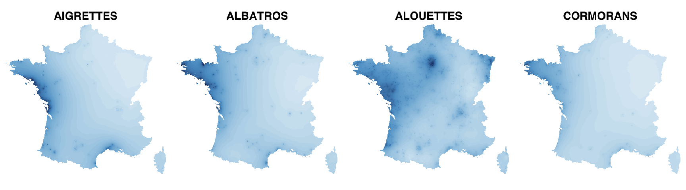 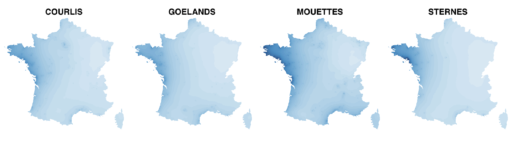
Les grands classiques des passereaux sont là , surtout dans les grand Ouest et la région Parisienne où on n’a pas hésité à leur faire de la place dans nos rues et allées.
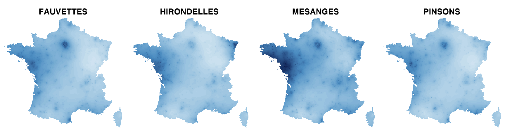
Dans le Sud-Ouest, les grives, palombes et tourterelles tirent leur épingle du jeu.
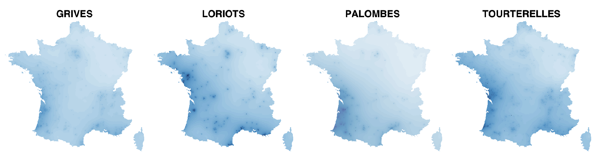
Les merles, les perdrix et bien évidemment les cigognes sont emblématiques en Alsace :

Au-delà des oiseaux, les écureuils attirent la sympathie dans tout le pays et les chevreuils préférentiellement en Gascogne ; les grillons mais surtout les cigales font carton plein dans le Midi.

Les noms de rues relatifs à la flore
Encore plus que les oiseaux, les plantes sont largement utilisées dans les odonymes de nos communes. Les vignes arrivent en tête pour faire honneur au pays du vin mais même les arbres fruitiers font recette.

Les genêts s’imposent en Bretagne quand les pommiers surclassent la concurrence en Normandie, les oliviers sur la côte Sud et souvent les vignes partout ailleurs, même dans des zones par réputées actuellement pour les vignobles.

Cartes minimales : la flore dans nos rues
Les bretons semblent très portés sur les espèces sauvages et rustiques (ajoncs, bruyères, genêts…) mais aussi sur les camélias et hortensias qui fleurissent dans leurs jardins. Vendéens, Ligériens et Franciliens font preuve d’une créativité débordantes avec leurs « rues des plantes ».
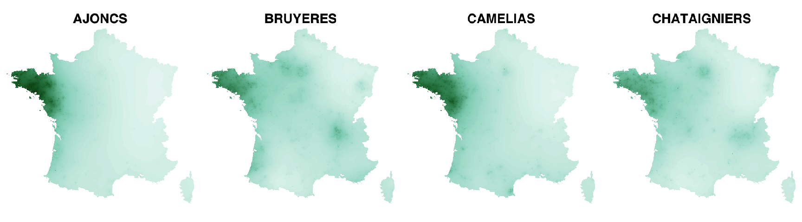 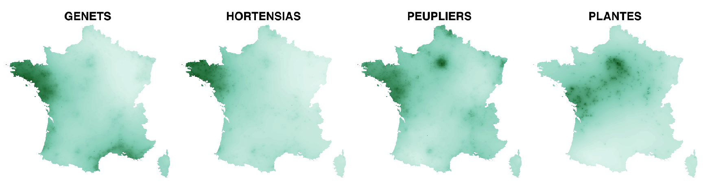
Les tilleuls, chênes, charmes et ormes sont bien présents sur une bonne moitié Nord du pays, les rosiers, les ormeaux et le verger plutôt implantés dans le Nord-Ouest, quand les fougères et misomas descendent le long de la côte Altantique.
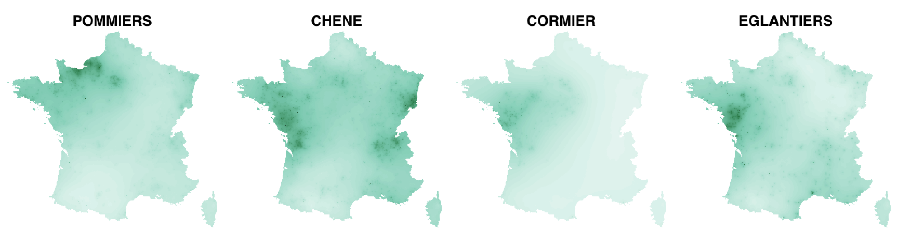  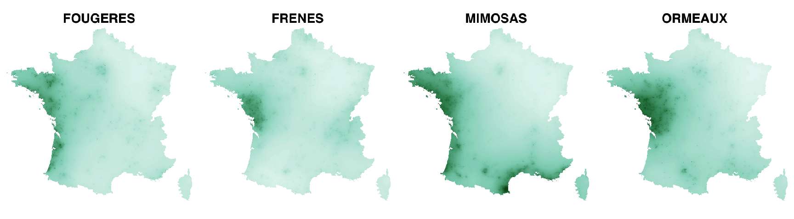
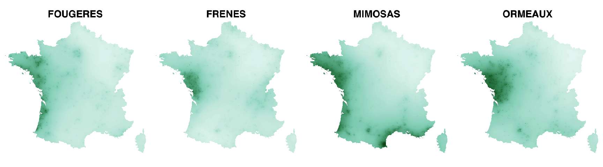 

Tulipes, roses et muguet fleurissent en Alsace ; la rue du marronier est une spécialité de Saintonge et les cyclamens en Haute-Savoie.

 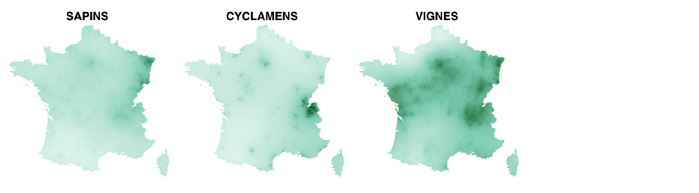
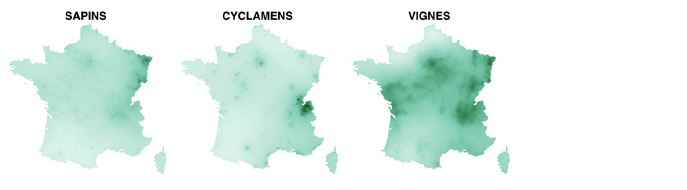
Enfin les spécifités végétales et arboricoles du Sud remontent plus au moins profondément dans le sillon du Rhône, voire sur le littoral Atlantique.
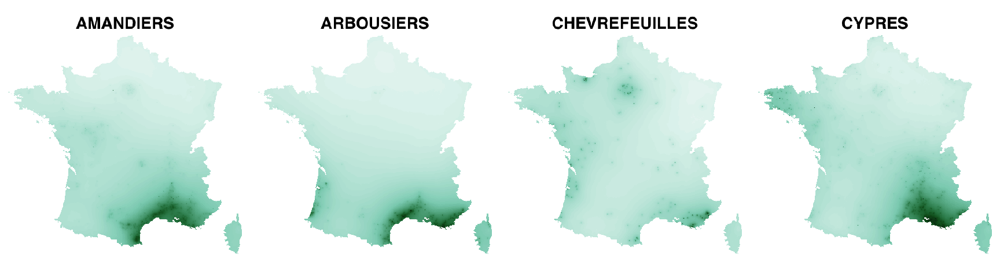  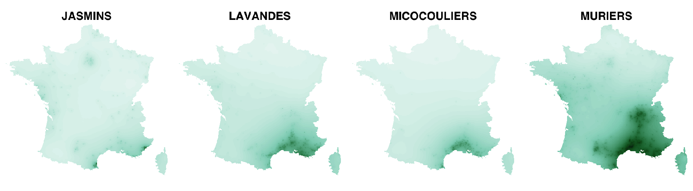 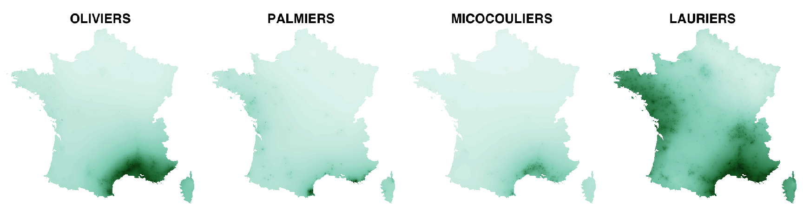
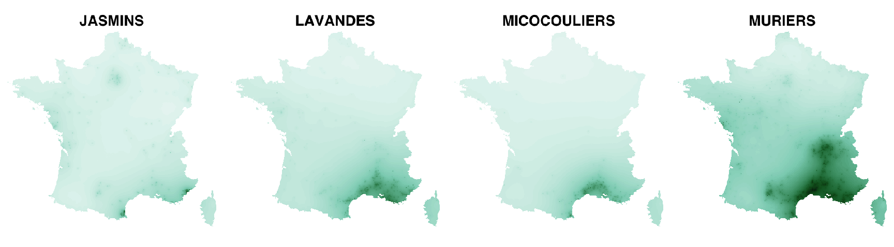 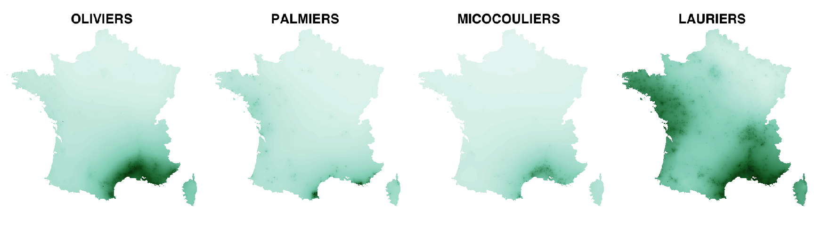 
Si des botanistes/ornithologues passent dans le coin et veulent bien nous éclairer de leurs lumières, qu’ils se sentent libres de laisser un commentaire ci-dessous.